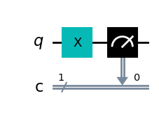
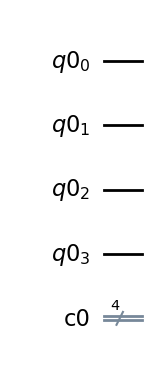
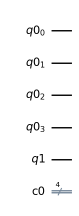
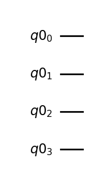
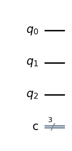
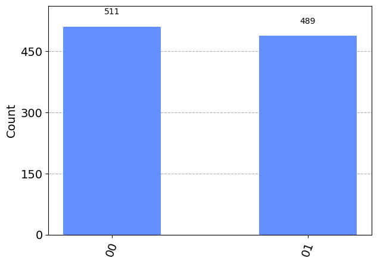
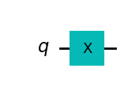
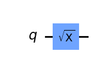
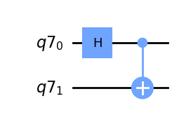
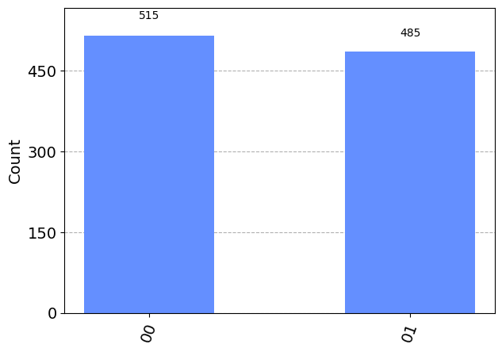

from qiskit import __qiskit_version__
print(__qiskit_version__)
import qiskit.tools.jupyter
%qiskit_version_tableBiblioteka Qiskit wprowadzenie
python3 -m venv venv
source venv/bin/activate
# Scripts\Activate
pip install qiskit==0.44.1
pip install qiskit[visualization]
# pip install 'qiskit[visualization]'
pip install qiskit_aer==0.12.2
pip install qiskit_machine_learning==0.6.1
pip install qiskit-finance==0.3.4
pip install qiskit-ibmq-provider==0.20.2
pip install qiskit-ignis==0.7.1Qiskit podstawy
Tworzenie rejestrów: kwantowego i klasycznego
from qiskit import QuantumRegister, ClassicalRegister, QuantumCircuitqReg = QuantumRegister(1, 'q')
cReg = ClassicalRegister(1, 'c')
circuit = QuantumCircuit(qReg, cReg)
circuit.x(qReg[0])
circuit.measure(qReg[0], cReg[0])
display(circuit.draw('mpl'))
qreq = QuantumRegister(4)creg = ClassicalRegister(4)circuit = QuantumCircuit(qreq, creg)circuit.draw('mpl')
output = QuantumRegister(1)circuit2 = QuantumCircuit(qreq, output, creg)circuit2.draw("mpl")
circuit3 = QuantumCircuit(qreq)circuit3.draw('mpl')
circuit4 = QuantumCircuit(3,3)
circuit4.draw("mpl")
Tworzenie stanu jednokubitowego
\[ \ket{\psi}=\ket{0} \]
from qiskit import QuantumRegister, QuantumCircuit, Aer, executeqr = QuantumRegister(1)
qc = QuantumCircuit(qr)
# klasyczny symulator pozwala zobaczyc stan
backend = Aer.get_backend('statevector_simulator')
job=execute(qc, backend)
result = job.result()
state = result.get_statevector()
print(state)Statevector([1.+0.j, 0.+0.j],
dims=(2,))state.draw('latex')\[ |0\rangle\]
from qiskit.visualization import plot_bloch_multivector
plot_bloch_multivector(result.get_statevector())
qr = QuantumRegister(1)
qc = QuantumCircuit(qr)
qc.h(qr[0])
backend = Aer.get_backend('statevector_simulator')
job = execute(qc, backend)
result = job.result()
state = result.get_statevector()
state.draw('latex')\[\frac{\sqrt{2}}{2} |0\rangle+\frac{\sqrt{2}}{2} |1\rangle\]
from qiskit.visualization import plot_bloch_multivector
plot_bloch_multivector(result.get_statevector())
Tworzenie stanu dwukubitowego
\[ \ket{00}, \ket{01}, \ket{10}, \ket{11} \]
qr = QuantumRegister(2)
qc = QuantumCircuit(qr)
qc.h(qr[0])
qc.h(qr[1])
backend = Aer.get_backend('statevector_simulator')
job = execute(qc, backend)
result = job.result()
state = result.get_statevector()
state.draw('latex')\[\frac{1}{2} |00\rangle+\frac{1}{2} |01\rangle+\frac{1}{2} |10\rangle+\frac{1}{2} |11\rangle\]
from qiskit.visualization import plot_bloch_multivector
plot_bloch_multivector(result.get_statevector())
qr = QuantumRegister(2)
qc = QuantumCircuit(qr)
qc.h(qr[0])
qc.cx(0,1)
backend = Aer.get_backend('statevector_simulator')
job = execute(qc, backend)
result = job.result()
state = result.get_statevector()qc.draw('mpl')
state.draw('latex')\[\frac{\sqrt{2}}{2} |00\rangle+\frac{\sqrt{2}}{2} |11\rangle\]
from qiskit.visualization import plot_bloch_multivector
plot_bloch_multivector(result.get_statevector())
Tworzenie stanu trzy-kubitowego
\[ \ket{000}, \ket{001}, \ket{010}, \ket{011}, \ket{100}, \ket{101}, \ket{110}, \ket{111}\]
qr = QuantumRegister(3)
qc = QuantumCircuit(qr)
# qc.x(qr[0])
# qc.x(qr[1])
# klasyczny symulator pozwala zobaczyc stan
backend = Aer.get_backend('statevector_simulator')
job=execute(qc, backend)
result = job.result()
state = result.get_statevector()Uruchom powyższy kod usuwajac poszczegolne komentarze i sprawdz wynik.
Dostępne symulatory
Aer.backends()[AerSimulator('aer_simulator'),
AerSimulator('aer_simulator_statevector'),
AerSimulator('aer_simulator_density_matrix'),
AerSimulator('aer_simulator_stabilizer'),
AerSimulator('aer_simulator_matrix_product_state'),
AerSimulator('aer_simulator_extended_stabilizer'),
AerSimulator('aer_simulator_unitary'),
AerSimulator('aer_simulator_superop'),
QasmSimulator('qasm_simulator'),
StatevectorSimulator('statevector_simulator'),
UnitarySimulator('unitary_simulator'),
PulseSimulator('pulse_simulator')]# uruchom w środowisku IBM Quantum Experience
from qiskit_ibm_provider import IBMProvider
provider = IBMProvider()
IBM_cloud_backends = provider.backends(operational=True,
min_num_qubits=5)
for i in IBM_cloud_backends:
print(i)Pomiar w obwodzie i wielokrotne uruchamianie układu
from qiskit import QuantumRegister, ClassicalRegister, QuantumCircuit
qreg = QuantumRegister(2)
creg = ClassicalRegister(2)
circuit = QuantumCircuit(qreg, creg)
circuit.h(qreg[0])
circuit.measure(qreg, creg)<qiskit.circuit.instructionset.InstructionSet at 0x15d2b30d0>from qiskit import execute, Aer
from qiskit.visualization import plot_histogram
simulator = Aer.get_backend('qasm_simulator')
job = execute(circuit, simulator, shots=1000)
print(job.job_id())
counts = job.result().get_counts(circuit)
print(counts)
display(plot_histogram(counts))51ce5816-8c1d-4f36-beb4-7a26752fdf3c
{'00': 508, '01': 492}